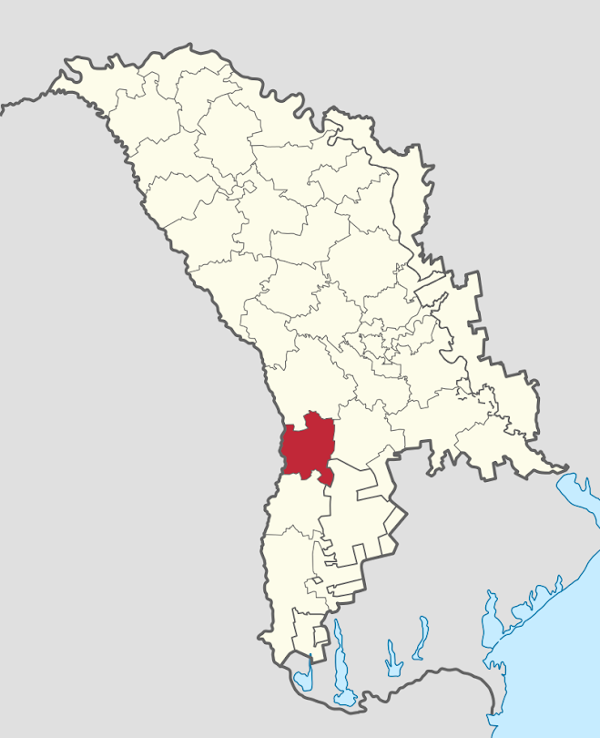

Bescemac
Bestemac este amplasat in raionul Leova situata la latitudinea 46.5275 longitudinea 28.5275 si altitudinea de 71 metri fata de nivelul marii. Aceasta localitate este in administrarea or. Leova. Conform recensamintului din anul 2004 populatia este de 1 061 locuitori. Distanța directă pîna în or. Leova este de 31 km. Distanța directă pîna în or. Chişinău este de 60 km.
Bestemac este o comuna este in componenta Raionul Leova situata la latitudinea 46.5275 longitudinea 28.5275 si altitudinea de 71 metri fata de nivelul marii. Primarul este VASILE MORARU din partea (ACUM - Blocul electoral „ACUM Platforma DA și PAS” ).